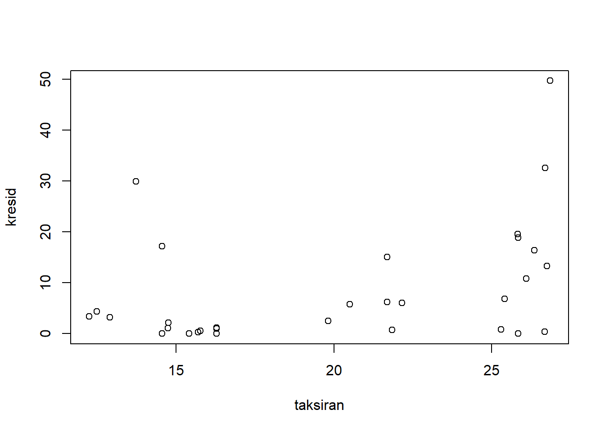
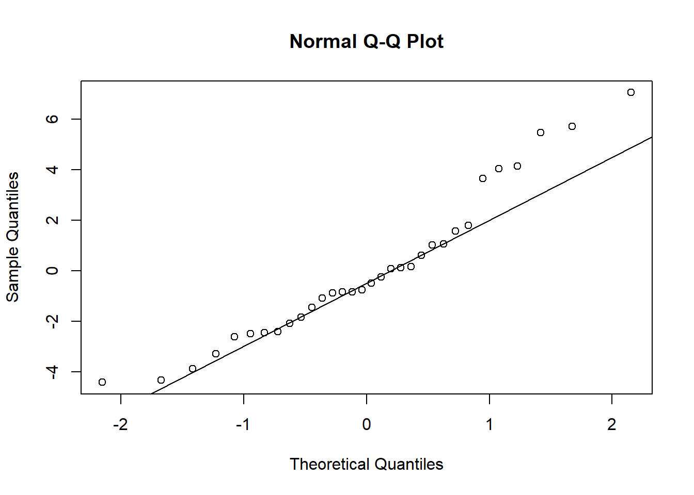

Chapter 5 Asumsi Regresi Linear
Setiap metode yang kita apakah harus kita ingat mempunyau syarat dan kondisi. Seperti kita mau membeli suatu maka kita menemukan suatau kondisi yang harus kita penuhi . Tanpa syarat dan kondisi tersebut maka kita tidak akan mendapatkan apa yang kita maui. Ada beberapa gejala kalau tidak bisa dibilang penyakit yang terdapat pada Regresi linear. Hal tersebut harus kita lewati sebagai syarat nilai peramalan dan juga koefisien determinasi dari regresi tersebut benar-benar valid. Dalam kalkulasi suatu persamaan regresi kita bisa menghasilkan nilai peramalan yang berbeda anatara satu dengan yang lainnya. Bukan salah menghitungnya karena memang sudah sedemikian begitu datanya. Ada beberapa penyebab yang menyebabkan dan biasanya adanya outlier. Bisa jadi kesalahan dalam mengumpulkan data juga turut serta dalam menghasilkan peramalan yang salah. Sudah nilai tersebut salah maka salah karenanya asumsi inilah yang harus diperbaiki. Ada beberapa hal yang membuat regresi tersebut tidak akan menjadi valid yang bisa kita perhatikan seperti ini:
5.1 Multikolinearitas.
Kita mau mencari hubungan anatara variabel independen dengan variabel yang dependen, hanya saja terjadi hubungan yang baik antara variabel independen dengan variabel independen juga atau sesama variabel independen. Hubungan ini tidak bisa dibiarkan karena akan menyebabkan variabel tersebut merusak nilai perhitungan dari regresi.
Hubungan sesama variabel independen dapat menyebabkan nilai R begitu tinggi, namun penduga (peramalannya menjadi bias). Untuk itu hal ini harus diatasi dengan cara membuang salah satu variabel yang sama.
Sebenarnya tidak terlalu sulit untuk menduga akan terjadinya multikolinearitas . Ketika kita melihat ada data tabel yang begitu mirip antara sesama variabel independen, kita harus mengecek apakah kita menyalin data yang sama untuk variabel yang berbeda. Terkadang salah satu data merupakan kelipatan dari data yang lainnya dan inilah yang menyebabkan korelasi begitu tinggi. Pastikan juga tidak ada data yang sama masuk ke dalam variable yang berbeda. Jika yakin ternyata data tersebut juga memang benar maka bisa jadi itu data memang mempunyai sifat yang sama. Hubungan antara korelasi keduanya sangat besar sekali hampir sampai lebih dari 80%. Kalau kita menggunakan Korelasi Pearson maka kita akan mendapatkan nilai korelasi yang tinggi.
Kesalahan ini bisa jadi karena memang datanya seperti itu. Seperti harga ayam kampung dengan harga ayam ras maka kita bisa pastikan keduanya mempunyai hubungan yang positif. Kalau harga ayam ras naik maka harga ayam kampung juga naik. Meski keduanya mempunyai harga yang berbeda namun mempunyai peluang untuk naik pada waktu yang sama atau turun pada waktu yang sama.
Untuk mendeteksi dari gejala ini adalah dengan melihat nilai VIF yang ada dalam software statistik. Nilai VIF yang lebih besar dari 10 maka terjadi yang namanya multikolinearitas. Kemudian ada juga nilai eugin value yang lebih dari 0,001.
Untuk mengatasi multikolinearitas adalah tidak sulit. Hanya saja pilihannya adalah membuang salah satu variable dalam regresi multi variable. Hanya saja masalahnya adalah pilihan yang mana yang mau dibuang kadang ini menjadi pilihan yang dilematis.
## Warning: package 'car' was built under R version 4.3.1## Loading required package: carData## Warning: package 'carData' was built under R version
## 4.3.1## cyl disp
## 5.366629 5.366629HAsil dari regresi tersebut menunjukan tidak terjadinya apa yang namanya multiklineartiast karena nilainya adalah 5,366629 atau masih dibawah nilai VIF=10
5.2 Autokorelasi
Nilai Autokorelasi terjadi ketika deret waktu mempunyai nilai galat (error) yang berkorelasi .Hal ini terjadi karena data berseri (time series) yang ada dalam suatu model. Pada beberapa kasus ternyata data cross section sendiri juga dapat mengalami autokorelasi. Pada autokorelasi terjadi karena galat yang berubah menurut waktu.
Untuk menilai apakah adanya terjadinya korelasi, kita dapat menggunakan kriteria sebagai berikut yakni dl (Durbin lower) yang berarati nilai Durbin terendah atau du (Durbin upper) yang berarti nilai durbin di atas. Semua nilai yang berada di antara kedua nilai tersebut harus memenuhi syarat sehingga, model yang kita buat sudah dikatakan terbebas dari autokorelasi.
Autokorelasi adalah suatu hubungan galat atau error yang berhubungan. Hubungan tersebut akan semakin membesar dan semakin mengecil pada tingkat peramalan yang dibuat oleh model yang memiliki gejala autokorelasi. Mau tidak mau nilai dari autokorelasi harus dihilangkan terlebih dahulu. Dengan kata lain kita harus membuat sesuatu model yang terbebas dari autokorelasi. Apapun regresi yang terjadi kesalahan termasuk autokrelasi karena adanya data tersebut. Karenanya pastikan terlebih dahulu data yang anda kumpulkan tersebut memang sudah benar. Setelah yakin kalau sudah melakukan regresi lagi.
Untuk mendeteksi gejala ini kita mengamati pola residual terhadap urutannya atau t. Kalau data residual mempunyai pola tertentu baik meningkat maupun menurun maka patut dicurigai terjadinya autokorelasi. Kalau data tidak mempunyai pola (pattern) atau data tersebar dengan bebas maka tidak terjadi autokorelasi.
Selain melakukan uji Durbin Watson kita bisa melakukan uji yang lain seperti Ljung Box uji ini juga dapat untuk menduga regresi yang kita lakukan. Uji ini akan menempatkan H0 atau Hipotesis nol adalah hasil regresi terdapat mengandung autokorelasi sedangkan hipotesis alternatif (Ha) menunjukkan kalau tidak ada autokorelasi dalam model yang diuji.
Nilai Durbin Watson yang dikembangkan mempunyai rumus seperti di bawah ini (5.1)
\[\begin{equation} du= (∑_(t=1)^n(e_(t-1)-e_t )^2 )/(e_t^2 ) \tag{5.1} \end{equation}\]
Dengan et = nilai error ke t et-1 = nilai error ke t-1
Dalam uji ini ditetapkan sebagai Hipotesis nol adalah jika terjadi autokorelasi sedangkan Ha diterima jika terjadi autokorelasi
H0 : ρ = 0 tidak terjadi autokrelasi Ha : ρ ≠ 0 terjadi autokorelasi
Autokorelasi itu terjadi karena danya kandungan data series tetapi seperti disinggung diatas kalau data cross section pun juga menjadi autokorelasi untuk mengatasi adalah kita bisa melakukan hal seperti ini. Kita menggunakan differencing pada data time series. Setelah difference atau pembedaan ada kemungkinan data time series juga bisa diperbaiki.
Salah satu mengatasi dengan menggunakan lag. Lag ini adalah konsekuensi dengan nilai dari regresi tersebut. Ada beberapa variable respon tidak selalu merespon dengan cepat. Karenanya ada sebuah respon tersebut maka aka nada repson yang terlambat sekali . Adapun bentuk antisipasi memang semuanya bervariasi karena memang tidak langsung. Bahkan kita curiga kalau suatu reaksi sudah diketahui sebelumnya berarti ada efek antisipasi oleh respon tersebut.
Untuk memeriksa apakah adanya autokorelasi maka kita bisa melakukan hal seperti ini yakni menggunakan dwtest yang ada di package lmtest;
## Warning: package 'lmtest' was built under R version
## 4.3.1## Loading required package: zoo## Warning: package 'zoo' was built under R version 4.3.1##
## Attaching package: 'zoo'## The following objects are masked from 'package:base':
##
## as.Date, as.Date.numeric##
## Durbin-Watson test
##
## data: regresimtcars1
## DW = 1.5965, p-value = 0.09521
## alternative hypothesis: true autocorrelation is greater than 0kemudian jalankan dwtets hasilnya menunjukkan nilainya tdiak signifikan berarti menerima hipotesis nol yang menunjukkan tidak terjadinya autokorelasi
5.3 Heteroskedatisitas
Pada mengumpulkan data, kita mungkin kurang memperhatikan adanya variance yang berbeda. Seharusnya dalam peramalan regresi juga kita harus memperhatikan asumsi bahwa error tidak berbeda E( ε ) = 0. Adanya perbedaan karena memang sulit sekali bagi regresi linear untuk mencari nilai yang paling mendekati dengan garis persamaan regresi yang mendekati dari data tersebut.
Hal ini harus segera dipebaiki. Sebelum kita melihat adanya dugaan heteroskedatisitas kita harus melihat terlebih dahulu adanya potensi dari heteroskedatisitas. Kita tahu adanya variance yang berbeda antara Y prediksi. Tentu untuk meminimalkan kita bisa menghilangkan hal tersebut. Penyebab dari terjadinya heteroskeditas adalah nilai yang ekstrim atau outlier dalam data. Maka data outlier tersebut jauh dari peramalan sedangkan kita sulit untuk membuat ramalan yang tepat. Dalam hal ini kitameyakini tidak adanya heterosekdatistiasta dalam model ini menggunakan uji studentdized Breusch-Pagan Test. Dalam uji ini RStudio akan mengelola nilai galat tersebut. DAri uji maka
Ho ; Tidak Terjadi Hteroskedatisitas H1 : Terjadi Heteroskedatitisitas
Kalau nilai peluang (p-value) > dari 0,005 maka kita akan menerima HO
##
## studentized Breusch-Pagan test
##
## data: regresimtcars1
## BP = 5.3769, df = 2, p-value = 0.06799Di awal mungkin kita tidak bisa untuk menebak atau menduga apakah yang terjadi dalam regresi kita tetapi kita bisa lakukan antara lain
Plot scatter antara predictor value dan residual kalau memuat grafik seperti pola topi runcing atau cone, maka akan adanya heteroskedatisitas
Plot scatter antara nilai yang diprediksi dan residual kalau berbentuk seperti pola tertentu bisa jadi pola sebaran itu seperti ada garis yang mempunyai trend cenderung ke atas atau ke bawah. Ada sekumpulan garis residual yang membentuk suatu pola. Tentu hal ini tidak baik karena menunjukkan adanya pola tertentu. kita bisa melakukan seperti mmembuat plot dari taksiran dan juga residual Marliana (2017).
Breusch pagan dan white test adalah untuk mendeteksi adanya heterosskedatisitas dengan cara menghitung. BReusch Pagan akan menghitung nilai (5.2)
\[\begin{equation} BR= n.R^2 \tag{5.2} \end{equation}\]
Setelah kita mengetahui adanya gejala heteroskedatisitas maka kita harus memperbaiki hal tersebut. Ada beberapa hal namun sebelum kita memperbaiki kita harus melihat dulu mengapa terjadi heteroskedatistas
## Mazda RX4 Mazda RX4 Wag
## -0.84395255 -0.84395255
## Datsun 710 Hornet 4 Drive
## -3.28885510 1.57324352
## Hornet Sportabout Valiant
## 4.14732774 -2.40601638
## Duster 360 Merc 240D
## -0.25267226 -0.89226849
## Merc 230 Merc 280
## -2.61371193 -2.48751693
## Merc 280C Merc 450SE
## -3.88751693 0.11418581
## Merc 450SL Merc 450SLC
## 1.01418581 -1.08581419
## Cadillac Fleetwood Lincoln Continental
## -1.84730532 -2.09430892
## Chrysler Imperial Fiat 128
## 1.79401841 5.70804444
## Honda Civic Toyota Corolla
## 3.64629354 7.05160883
## Toyota Corona Dodge Challenger
## -4.33979314 0.08281514
## AMC Javelin Camaro Z28
## -0.50535572 -1.45850859
## Pontiac Firebird Fiat X1-9
## 5.47067308 0.61421953
## Porsche 914-2 Lotus Europa
## 0.16432359 4.04561603
## Ford Pantera L Ferrari Dino
## 1.06207504 -2.45270705
## Maserati Bora Volvo 142E
## -0.76710662 -4.42126787taksiran<-fitted(regresimtcars1)
kresid=residuals(regresimtcars1)*residuals(regresimtcars1)
plot(taksiran,kresid)
Hetereoskedatisitas mengakibatkan peramalan menjdi bias membuat estimasi tidak efisien. Dalam regresi heteroskedatisitas mengakibatkan nilai t akan besar sehingga seolah terlihat nilai yang sangat signifikan. Nilai tersebut tentu tidak baik dan tidak mencerminkan nilai yang sesungguhnya. Supranto
Ibarat memperbaiki Kursi
Ketika kita memperbaiki suatau gejala contoh autokorelasi bisa jadi heteroskedatisitas yang tadinya belum ada akan muncul. Hal ini bisa terjadi kalau perbaikan pada kita seperti kita memukul kayu di suatu tempat maka akan ada yang terpukul di lain pihak hal itu biasa saja dalam praktik untuk membuat suatu model yang tepat . Maunya kita membetulkan satu namun tidak merusak yang lain tapi itu tidak bisa terjadi. Kalau kita mengetahui akar masalahnya maka kita akan bisa menyelesaikan masalahnya.
Terkadang beberapa hal yang banyak yang sudah kita laakukan namun belum memasukkan atau belum menemukan suatu model yang sudah terbebas dari keseluruhan asumsi normal yang menjadi syarat dalam regresi sudah terbebas. Baru model tersebut dapat dikatakan menjadi estimator atau penduga yang baik.
Untuk itu memang perlu kesabaran dari proses pengolahan data tersebut. Karena adalah hal yang ketentuan bisa menjadi berubah maka hal itu harus melewati revisi juga.
Regresi linier sederhana Regresi linier bergabda Asumsi Normal V V Multikolinearitas X V Heteroskedatiositas V V Autokorelasi V V
5.4 Asumsi Normalitas
Kembali lagi ke dalam stataistik dasar kalau kita tahu bahwa regresi tersebut juga memiliki data yang normal atau normalitas. Nilai residual dari peramalan tersebut terdistribusi normal. Jadi bukan datanya yang terdistribusi normal. Ketika hasil regresi linier berganda ini adalah kita akan melihat nilai residual adalah normal atau terdistribusi normal. Data yang normal adalah data yang tersebar menurut seperti lonceng tersebut. Data yang tidak tersebar normal berarti ada sesuatu yang tidak sesuai. Karenannya hasil prediksi dari data tidak normal menjadi tidak konssten.
Untuk membuktikan kalau sebuah hasil residual terdistribusi normal maka kita bisa melihat dari table satu grafik batang yang menunjukkan sebaran yang normal. Sebaran normal seperti bentuk gunung yang simetris atau lonceng yang simetris. Baik sisi Kanan dan kiri mempunyai dua sisi yang terbagi sempurna. Kalau sudah seperti ini mska data akn tersebar normal. Pada dasarnya kita sulit sekali mendapatkan sesuatu ynag normal. Terkadang dan memang seringnya muncul grafik yang tidak normal. Hal ini biasa saja karena persebaran data tersebut sering tidak normal apalagi kalau menggunakan data yang dalam jumlah terbaras. Ada kemungkinan data akan mempunyai banyak outlier yang akan menyebabkan residual malah tidak baik model permalannya
KIta menggunakan uji Shapiro test akan seperti ini adalah Dalam melakukan uji regresi kita harus memastikan kalau data tersebut juga harus mempunyai normal.Data yang tersebar normal ini penting untuk memastikan kalau hasil regresi tersebut menjadi sah. Untuk melakukan itu kita bisa melalukan uji baik dengan test Shapiro-Wilk Normality Test atau kita juga menggunakan qqnorm atau qqline dari reisudal tersebut.
Melakukan uji normalitas pada data dengan Shapiro Wilk test adalah dengan mengetikan perintah shapiro.test terhadap residual regresi mt cars. Dari sana terlihat output tersebut
##
## Shapiro-Wilk normality test
##
## data: residuals(regresimtcars1)
## W = 0.9419, p-value = 0.08479Kita juga dapat melihat dengan plot ini untuk meyakinkan kalau data tersebar normal. Hasil nilai dari Shapiro adalah 0,9419. Dalam uji ini Nilai Ho adalah Data tersebar normal sedangkan Hipotesis Alternatif (Ha) dari uji ini adalah data tdiak tersebar normal. Aturan dalam uji ini jika nilai p (P-Value) ebih besar dari 0,05 (p>0,05) maka keputusan dari uji ini dalah tidak bisa menolak HO. Artinya Data pada reiduals ini adalah tersebar dengan normal.
Selain itu kita bisa melakukan dengan grafil normal qq plot. Dengan data itu kita bisa untuk melihat adanya data yang tersebar normal. Kita bisa menggunakan perintah qq normal dengan residuas. Kemudian kita bisa menambahkan qqline. Agar terlihat garis data normalitasnya.
